Автобусы
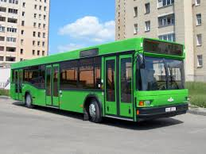
МАЗ-103 — белорусский полунизкопольный (ступенька у задней двери) городской автобус, выпускается Минским автомобильным заводом с 1996 года. Является базовым для семейства из нескольких моделей различной компоновки и назначения.
В 1992 году Минским автомобильным заводом был подписан лицензионный договор с фирмой Neoplan. В результате появилась модель МАЗ-101, однако её цена и низкая надёжность при эксплуатации на дорогах плохого качества делали её неконкурентоспособной на рынке СНГ. В результате было построено всего пять лицензионных автобусов в «чистом виде». На заводе было принято решение внедрять отечественные комплектующие, при этом приспосабливая конструкцию к местным условиям. В результате был разработан автобус МАЗ-103, на котором был применён задний мост собственной конструкции вместо портального моста, устанавливавшегося на МАЗ-101. Это привело к появлению ступеньки в задней двери (в двух остальных дверях ступеньки отсутствуют), однако положительно сказалось на цене, надёжности и ремонтопригодности автобуса.
К 300-летию Санкт-Петербурга было выпущено несколько автобусов-туалетов моделей МАЗ-163М и МАЗ-163W, которые были зачислены на баланс «Водоканала».
Также сборка автобусов МАЗ-103 осуществлялась в Нижнем Новгороде на мощностях предприятия «Самотлор-НН». Такие автобусы имеют другую переднюю маску с круглыми фарами меньшего размера. Также в Нижнем Новгороде выпускалась версия школьного автобуса МАЗ-103.
С 2008 года производится рестайлинговая версия автобуса с более современным оформлением кузова и салона.
С 2017 года производится также с двигателем на компримированном природном газе (метан).
Эксплуатируется в нескольких десятках городов Белоруссии, России (таких как Москва, Санкт-Петербург, Казань, Краснодар, Ростов-на-Дону, Красноярск, Пенза, Саранск, Ижевск, Иркутск, Сочи, Норильск), Украины, Казахстана, Румынии, Сербии, Венгрии, Польши.
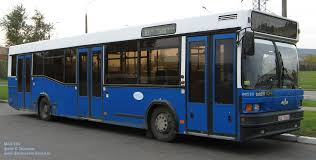
МАЗ-104— белорусский городской автобус большого класса Минского автомобильного завода.
Выпускался в 1997—2007 годах.
Был разработан как более дешёвая и неприхотливая высокопольная версия базового полунизкопольного автобуса семейства МАЗ-104. Для достижения поставленных целей разработчики использовали двигатель ЯМЗ-236 и унифицировали другие узлы автобуса с грузовыми автомобилями МАЗ, однако при этом пришлось отказаться от низкопольной конструкции. Двигатель во всех модификациях расположен в заднем свесе.
Количество сидячих мест - 24-40 шт. (в зависимости от заказа). Общая пассажировместимость - 100 человек.
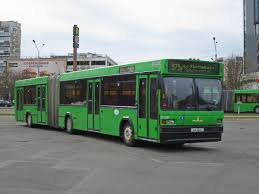
МАЗ-105 — белорусский сочленённый автобус особо большого класса. Выпускался Минским автомобильным заводом с 1997 года. Унифицирован с другими автобусами семейства МАЗ-103, созданного по аналогии автобусам Neoplan. В 2009 году был произведён рестайлинг относительного исходного дизайна. Имеет привод на средние колёса.
МАЗ-105 имеет современный вид благодаря большим и различным по форме боковым окнам, лобовому стеклу прямоугольной, слегка выпуклой формы, разделенному на две части, увенчанному дисплеем для индикации номера маршрута.
Двигателем МАЗ-105 является немецкий Mercedes-Benz OM906LA (Евро-3) объёмом 6,37 литра и мощностью 279 лошадиных сил. Оснащён автоматической коробкой передач Voith.
Максимальная скорость МАЗ-105 составляет 75 км/ч. По заказу может быть установлен кондиционер, электронная информационная система, раздвижные окна. Вместимость модели — 160-175 человек, количество сидячих мест колеблется от 30 до 36.
Эксплуатируется во многих городах Белоруссии, России, Украины, Казахстана, Кубы.Производился на МАЗе с 1997 года. В 2003 году уменьшен моторный отсек (до этого занимал место от пола до потолка). В январе 2009 года был произведён рестайлинг. В 2014 году выпуск автобусов МАЗ-105 был прекращён, последняя партия поступила летом 2014 года в Барановичи. Но на заводе осталось шесть каркасов под эту модель автобуса, которые в конце осени 2017 были собраны. Произведённые после трёхлетнего перерыва автобусы поступили снова же в Барановичи
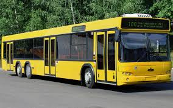
МАЗ-107 — 14-метровый трёхосный односекционный автобус особо большого класса, выпускаемый Минским автомобильным заводом с 2001 года. Относится к первому поколению автобусов МАЗ, унифицирован с МАЗ-103 и МАЗ-105, имеет сходство с Neoplan-N4016 и Neoplan-N4020, на основе которых создано семейство.
Выпускается несколько модификаций с разными двигателями и коробками передач. В 2008 году начали выпускаться рестайлинговые модификации МАЗ-107.46*, у которых был изменен дизайн передка и задней панели. В течение производства устранялись недостатки и улучшались уже существующие преимущества.
Для МАЗ-107 предусмотрены самые разнообразные комплектации. Автобус может быть укомплектован немецкими (Mercedes-Benz или MAN) или белорусскими (ОМУ) двигателями, механической или автоматической коробкой передач. Возможно разное планирование салона и количество мест, имеется широкий список дополнительного оборудования. МАЗ-107 и другие МАЗы первого поколения выпускаются наряду с МАЗами второго поколения и претерпевают постоянные усовершенствования.
МАЗ-107 эксплуатируется в городах Белоруссии (наибольшее количество оригинальных МАЗ-107 в Гомеле), России, Украины, Румынии, Эстонии, Польши, Кубы. Широко распространён в Москве (около 370).
На базе МАЗ-107 планировалось наладить производство троллейбусов МАЗ-107Т, однако проект не был осуществлён.
МАЗ-107 может выпускаться в пригородном варианте.
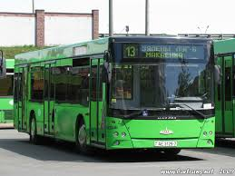
МАЗ-203— белорусский низкопольный городской автобус второго поколения Минского автомобильного завода.
Высота пола по всей поверхности 330 мм от полотна дороги (в отличие от МАЗ-103, у которого уровень пола повышался на задней площадке). Технология изготовления кузова общая для всех автобусов МАЗ второго поколения (МАЗ-256, МАЗ-206, МАЗ-251, МАЗ-171) — каркас изготавливается из оцинкованных труб прямоугольного и специального сечения, в него вклеиваются стеклопластиковые панели обшивки и стекла, причём профили накладок на швах не устанавливаются. Применено лобовое стекло панорамного типа. В салоне может быть установлен кондиционер. Передняя дверь МАЗ-203 в базовой комплектации такая же широкая, как и все остальные (в отличие от МАЗ-103, где одна половина передней двери использовалась для входа в водительскую кабину). Позже по заказу Минска была разработана модификация с перегородкой в передней двери (как в МАЗ-103), что объясняется недостаточным обзором правой стороны дороги при максимальной загрузке в час-пик.
Двигатель может быть как импортного производства, соответствующий нормам Евро-4, Евро-5 и Евро-6 с автоматической коробкой передач, так и производства ММЗ. С 2017 года выпускается МАЗ 203965 - с двигателем на компримированном природном газе (метан). В конструкции автобуса применены портальные мост и передняя ось. Все колеса оборудованы дисковыми тормозами с пневматическим приводом, кроме того, установлены системами ABS и ASR.
МАЗ-203 полностью отвечает европейским требованиям для перевозки пассажиров (Правила ЕЭК ООН № 85, № 107), что позволит ему выйти на рынки стран ЕС. В частности, автобус закупали автотранспортные предприятия Польши и Германии.
Автобус получил специальный приз профессионального жюри на 9-й московской международной автомобильной выставке «Мотор-шоу-2005» (англ.)русск., он также признан лучшим городским автобусом большого класса на международном автосалоне SIA-2006 (Киев).
На базе автобуса разработан троллейбус МАЗ-ЭТОН Т203.Мелкосерийное производство этого автобуса началось со второго квартала 2006 года; первая крупная партия из пятидесяти автобусов была произведена по заказу Казани в первой половине 2007. Кроме того, поставки новой машины начались в другие города России, Белоруссии и Украины, в 2007 первую партию из пятидесяти автобусов закупила Казань, где по состоянию на ноябрь 2014 года эксплуатируются 49 таких машин. Также они работают в таких российских городах как Калининград, Тюмень, Тамбов, Санкт-Петербург, Ростов-на-Дону и Екатеринбург. Так же эксплуатируется в Польском городе Кельце. Активно автобусы МАЗ-203 эксплуатируются в Киеве, Львове и Запорожье.
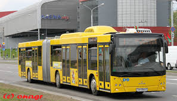
МАЗ-215 — белорусский городской сочленённый низкопольный автобус особой большой вместимости. Предназначен для перевозки пассажиров на маршрутах с большой загруженностью. Является преемником МАЗ-105.
Как и базовый МАЗ-203, МАЗ-205 полностью низкопольный, что очень удобно для городских маршрутов. Также есть пандус для людей с ограниченными возможностями. МАЗ-205 соответствует европейским нормам.
В кабине водителя установлено новейшее оборудование, а также имеется большое количество удобств для водителя. Как и на МАЗ-203, передние двери предназначены только для пассажиров (в одной модификации есть пятая («глухая») дверь для водителя).
Двигатель на МАЗ-205 — Мерседес-Бенц (Евро-5), что позволяет его эксплуатировать в странах Восточной Европы. Поскольку некоторые страны переходят на Евро-5, МАЗ-205 предлагается как замена старым автобусам. Двигатель находится перед «гармошкой».
Активно эксплуатируется в городах Белоруссии и Польши.
В 2011 году был также представлен и удлинённый вариант с бо́льшим количеством дверей МАЗ-215— городской сочленённый низкопольный автобус особо большой вместимости Минского автомобильного завода. Создавался с целью минимизации главного недостатка автобуса МАЗ-205 — огромной моторной шахты напротив второй входной двери тягача. Имеет такую же длину как и МАЗ-205. По сути автобус МАЗ-215 глубоко перекомпонован и является новой моделью, хотя внешне отличается только дополнительной двустворчатой дверью (хотя есть и 4-дверная версия) и горбом на крыше. В результате конструкторских работ изменилась длина прицепа (стал короче) и тягача автобуса (удлиннился), много моторных систем переместились на крышу и поменяли своё местоположение, на крыше имеется колпак, закрывающий моторные системы. Данные мероприятия позволили уменьшить моторную шахту в салоне, вместить вторую двухстворчатую дверь в базе тягача, кроме того напротив второй входной двери тягача появилась накопительная площадка с местом для размещения инвалида. Накопительная площадка в прицепе по сравнению с МАЗ 205 уменьшилась, но место для размещения инвалидной коляски осталось. В целом можно считать автобус МАЗ-215 гораздо более не удачной моделью в плане компоновки чем МАЗ 205, особенно для работы на маршрутах с очень большим пассажиропотоком
В 2018 году был разработан МАЗ-216 - автобус с двигателем в прицепе ("толкающий" привод). За базу были взяты автобусы МАЗ-205 и МАЗ-215. Впервые конструктора расположили ведущий привод не в головной секции, а в прицепе. Первый автобус завод планирует выпустить в конце 2018 года. Данный автобус всё также будет являться низкопольным. На МАЗ-216 планируют ставить двигатель фирмы Mercedes-Benz, оснащённый 326-ю лошадиными силами, и автоматической коробкой передач Allison. Новая модель будет иметь 40 мест для сидения и 165 человек вместимости.
Троллейбусы
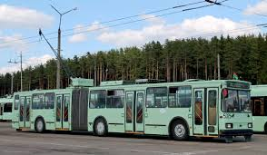
АКСМ-213— сочленённый трёхосный троллейбус производства Белкоммунмаш.
В 2002 году, в целях замены морально устаревших ЗиУ-683, на основе троллейбуса АКСМ-201 был создан первый экземпляр троллейбуса особо большой вместимости АКСМ-213 с применением узла сочленения производства МАЗ или Hubner. АКСМ-213 выпускался с 2002 по 2007 годы. Большая часть произведенных АКСМ-213 работают в Минске, всего лишь 1 машина поставлена в Гомель и 2 — в Кишинёв.Кузов троллейбуса двухвагонной компоновки с рамной основой. Обшивка сторон и крыши осуществлялась с помощью натянутых стальных оцинкованных листов толщиной 0,9 мм. Лобовая часть троллейбуса выполнен из стеклопластика. Троллейбус, как и все остальные выпущенные на заводе Белкоммунмаш, имеет высокую антикоррозийную защиту и срок службы составляет не менее 16 лет. Бампер троллейбуса сварной, металлический. На бампере крепится номер (если троллейбус не содержит бортового), а также одинарные фары высокой мощности. Зад прицепа также выполнен из стеклопластика, на задней панели располагается по 5 задних фар с каждой стороны.
Для соединения тягача и прицепа используется узел шарнирного сочленения. Первоначально использовался узел сочленения HF485 фирмы Hubner (Германия), с середины 2003 по 2007 год устанавливался узел сочленения белорусского производства, аналогичный тем, что был на автобусах МАЗ-105, а также узел сербского производства. Ведущий мост — средний (задний мост тягача). Колеса прицепа сдвоенные, неповоротные. Система рабочего тормоза — электропневматическая. Все дверные проёмы оборудованы двумя ступеньками на входе в салон. Ступени сделаны из стеклопластика и отделан резиной или линолеумом. Сиденья мягкие, раздельного типа, покрытые антивандальной тканью. Всего имеется 41 место для сидения, преимущественно сдвоенные. Троллейбус имеет четыре двери — все они двустворчатые, вследствие чего высадка и посадка пассажиров более ускорен. Электропневматический привод дверей имеет так называемый «воздушный ключ», блокировщий ход троллейбуса при открытых дверях. Поручни выполнены из стальных труб, которые окрашены, прочной на солнце, полимерной краской. Общая вместимость салона составляет 168 человек. Вентиляция салона осуществляется через форточки на окнах, или принудительно через два люка в крыше. Отопление электрокалариферное и питается от контактной сети.
Кабина водителя полностью отгорожена от салона, перегородка имеет два окна и специальную сдвижную форточку в одном из них для продажи билетов. Дверь в кабину снаружи открываются автономно. Кресло водителя мягкое с подресорами, регулируется в высоту и глубину, соответствует эстетическим нормам. Приборная панель сделана в стиле торпеды из термопластика. Лобовое стекло изогнутое, бесцветное. Вентиляция кабины производится через форточку, обогрев — через калорифер. Стеклоочистители рычажные, лобовое стекло разделено надвое. Рулевое управление с гидроусилителем, унифицировано с автобусами Минского автомобильного завода. Электрооборудование перенесено на крышу и почти полностью исключает возможность удара током. Троллейбус имеет повышенную степень безопасности электроизоляции, все электрооборудование защищено от осадков. В зависимости от потребностей заказчика троллейбус мог комплектоваться дополнительным оборудованием.
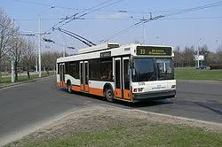
АКСМ-221 — двухосный низкопольный троллейбус производства Белкоммунмаш. При сборке троллейбуса используется машинокомплект автобуса МАЗ-103, кроме того машины унифицированы по многим узлам. Троллейбус АКСМ-221 оснащен тиристорно-импульсной системой управления (ТИСУ). Троллейбус оборудован электронным табло-маршрутоуказателем и автоинформатором.
АКСМ-221 выпускался в 2003—2010 годах, всего было выпущено 169 машин, все поставлены в Минск. В 2007—2010 годах была выпущена вторая партия машин: 105 троллейбусов было поставлено в Минск и 21 — в Брест.
троллейбус АКСМ-221 почти полностью унифицирован с белорусским автобусом МАЗ-103. Его кузов и габариты остаются неизменными — в длину троллейбус имеет 12,2 метра, в ширину 2,52 метра и в высоту 3,24 метра. Кузов троллейбуса похож на кузов МАЗ-103, он вагонной компоновки, несущий, с закруглёнными боковинами и рамной основой.
Передняя часть выполнена из стеклопластика, разбита вертикально на три секции, оснащена сварным бампером с дополнительным резиновым покрытием. Фары одинарные, большого размера, унифицированы с МАЗ-103. Боковины выполнены из цельнотянутого стального или оцинкованного листа толщиной 0,9 мм, как правило они покрыты стеклопластиком. Задняя часть троллейбуса выполнена из стеклопластика и содержит габаритные огни и задние фары, крыша сделана из оцинкованного стального листа. Комплект электрооборудования полностью вынесен на крышу, таким образом у троллейбуса повышенная изоляция и безопасность управления.
У кузова повышенная стойкость к коррозии. Защита нанесена на кузов, мосты, ободы колес и большую часть металлических деталей. Антикоррозийное покрытие от фирмы R — M (Франция). Значительно повышенный ресурс кузова и ходовых частей — не менее 10 лет службы.
Настил салона выполнен из бакелизованной фанеры или из линолеума, в местах наибольших нагрузок обит алюминием и алюминиевыми профилями. Стороны внутри обшиты стеклопластиком или обычным пластиком, покрыты антикоррозийным покрытием. Сидения в троллейбусе мягкие, раздельного типа, покрыты легко очищаемой тканью, могут быть полуковшового типа. Всего сидений 25 штук.
Троллейбус оборудован одною сборной площадкой, которая оснащена оборудованием для перевозки инвалидов, включая дополнительный выдвижной пандус, выдвигающийся из-под средних дверей. Перила вертикальные (устанавливаются в сборных площадках и у дверей) и горизонтальные — расположены вдоль всего салона с правой и левой сторон, оснащены кожаными ручками.
Двери двустворчатые, поворотно-раздвижного типа, малошумные, открываются при помощи электропневмопривода. Также двери оснащены механизмами против защемления и блокировкой движения с открытыми дверьми. Боковые окна толщиной 4-5 миллиметров тонированы зелёной или чёрной пленкой. Общая вместимость троллейбуса при полной загрузке 108 человек.
Кабина водителя отделена от салона перегородкой, имеет отдельные двери извне (передняя створка 1 двери) и вовнутрь. Кабина оборудована всеми необходимыми предметами при аварийной ситуации, например дополнительная система контроля за троллейбусом, который помогает найти поломку, также есть аптечка, огнетушитель, возможно установить дополнительное оборудование. Пульт управления выполнен из стеклопластика, электрооборудование вынесено полностью на крышу. Есть функции анти-запотевания и замерзания лобового стекла. Ветровое стекло бесцветное, выгнутое, разделено надвое, стеклоочистители рычажные, сконструированные из металла и пластика, очень прочные.
Комплект тягового электрооборудования тиристорно-импульсный, салон и двери электроизолированы, изоляция кузова выполнена с повышенными мерами безопасности, например, кабеля штангоулавливателя покрыты двумя слоями изоляции, а оборудование герметизировано.
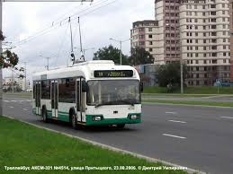
АКСМ-321— белорусский низкопольный троллейбус большой вместимости для внутригородских пассажирских перевозок, выпускаемый серийно с 2003 года на Белкоммунмаше. Относится к третьему поколению троллейбусов, разработанных заводом.
Модель троллейбуса используется во многих городах России, а также в Белоруссии, Украине, Киргизии, Молдавии и Сербии. Более двух третей выпущенных машин были поставлены в Минск (29 %), Москву и Кишинёв (по 10 %), Гомель (7 %), а также в Белград, Могилёв и Санкт-Петербург (по 4 %).
Троллейбус модели 321 — двухосный низкопольный городской троллейбус большой вместимости. Кузов троллейбуса имеет несущую конструкцию. Обшивка крыши и боковин выполняется из листов высокопрочной оцинкованной стали. Трубы каркаса, обшивка кузова, днище кузова, поверхности рамы-фермы, мосты и некоторые другие элементы обрабатываются антикоррозионными эмалями французской фирмы RM. Кузов также покрывается фосфатной краской, защищающий кузов от коррозии, кузов имеет ресурс работы не менее десяти лет.
Передок троллейбуса, а именно его обшивка, выполняется из стеклопластиковой панели. Бампер троллейбуса выполнен из стали и облицован стеклопластиковой оболочкой. Бампер состоит из трёх частей. В 2008 году троллейбус модели 321 пережил рестайлинг и передние фары были заменены на светотехнику, унифицированную с новыми моделями грузовых автомобилей МАЗ, сделанную в городе Руденске. В 2007 году было выпущено несколько экземпляров с точечной оптикой фирмы Hella, однако в дальнейшем машины с такими фарами уже не выпускали. С 2009 года троллейбусы получили новые головные фары производства Беларуси и передний бампер новой формы.
Лобовое стекло троллейбуса АКСМ-321 панорамного типа, стеклоочистители троллейбуса горизонтального типа (установлены друг под другом). Большинство троллейбусов АКСМ-321 оснащаются электронными маршрутоуказателями таких производителей, как «Интеграл», «МЕМЗ», «АГИТ», «Селена» и «ТИСА». Боковые зеркала заднего вида сферического типа, оборудованы антибликовым покрытием и электроподогревом. Моторный отсек троллейбуса размещён в его заднем свесе с левой стороны. АКСМ-321 может комплектоваться различными электродвигателями: ДК-211БМ российского производства, постоянного тока (мощностью 170 киловатт), асинхронным чешским Škoda (мощностью 185 киловатт), асинхронным белорусского производства АНТ-155 (мощностью 185 киловатт), а также асинхронными двигателями российского производства ДТА-1У1 (мощностью 180 киловатт) и АТЧД-250 (мощностью 150 киловатт).
Троллейбус оборудован пневматической системой штангоулавливания, обеспечивающей дистанционный съем штанг с проводов контактной сети, в дальнейшем токоприемники фиксируются вдоль оси троллейбуса. Кроме этого, троллейбус оборудован двумя бобинами, прикреплёнными к задней панели и барабанами внутри них, на которые наматываются канаты для обычного снятия штанг с контактной сети. Задняя, как и передок, выполнена из стеклопластика, бампер — стальной со стеклопластиковой облицовкой.
Троллейбусы оснащаются мостами таких европейских производителей, как RABA или ZF.
Для питания низковольтных цепей троллейбуса применяется статический преобразователь, преобразующий входное напряжение в 550 Вольт в 28 вольт; для питания низковольтных цепей также применяются две 12-вольтные аккумуляторные батареи. Возможна также установка конденсаторных батарей для автономного хода.
Троллейбус АКСМ-321 оснащён пневматической подвеской. Передняя подвеска троллейбуса двухбаллонная, зависимая пневматическая. Задняя подвеска зависимая пневматическая. Упругие элементы подвески — пневмобаллоны, кроме обеспечения мягкости хода предоставляют троллейбусу возможность присесть на остановках направо, понижая уровень пола ещё на несколько сантиметров для облегчения посадки инвалидов и пассажиров с детскими колясками.
Тормозная система троллейбуса двухступенчатая. Пневматическая тормозная система троллейбуса двухконтурная, тормозные механизмы передних колес являются дисковыми (при использовании мостов ZF) или барабанными (при использовании мостов RABA). Тормозные механизмы ведущего моста барабанного типа Raba, или дискового типа ZF Passau. Кроме этого, троллейбус оборудован антиблокировочной системой АБС (ABS).
Троллейбус имеет низкий уровень пола при всех входах, а высота пола составляет 36 сантиметров над уровнем земли. Также предусмотрена откидная аппарель при входе в средней двери.
Пол салона выполняется из бакелизированной фанеры толщиной 12 миллиметров, которая крепится к основанию кузова (рамы-фермы); затем застилается износостойким ковром из нескользящего линолеума; обшивка бортов и потолка выполняется из пластика серого и белого цветов. Поручни троллейбуса выполнены из тонкой стальной трубы, окрашены полимерной краской, что улучшает их устойчивость к коррозии; перила устойчивы против механического износа и солнечного света; поручни снизу крепятся к полу салона, сверху — к потолку; вертикальные поручни могут оснащаться кнопками подачи сигнала водителю с целью остановки троллейбуса по требованию. Горизонтальные поручни могут быть оборудованы кожаными ручками для большего удобства. В 2011 году был изменён дизайн поручней и стеклянных перегородок на аналогичный автобусу МАЗ-203.
В салоне размещается 26 сидений, полная вместимость троллейбуса составляет 115 (101, согласно требованиям ЕЭК ООН) человек. Система вентиляции салона представлена большими сдвижными форточками, на троллейбусах после 2012 года выпуска появились 2 вентилятора салона. Единственный существенный недостаток — отсутствие крышных люков из-за компоновки электрооборудования на крыше. Возможна установка кондиционера, как для водителя, так и для пассажирского салона. Система отопления в пассажирском салоне представлена тремя электрокалориферами, с двумя режимами обогрева и мощностью четыре киловатта (2 шт.) и шесть киловатт — (1 шт.); в кабине водителя стоит электрокалорифер мощностью в 6 КВт.
Приборная панель троллейбуса сделана в виде полуга, что предоставляет водителю быстрый доступ ко всем необходимым органам управления. Посередине приборной панели размещен блок из показательных приборами: посередине панели размещён большой округлый спидометр (немецкого производства, VDO), имеющий электронный одометр, слева и справа от спидометра размещаются манометры и указатель напряжения в бортовой сети. На части троллейбусов эти приборы заменены электронным дисплеем. С 2011 года устанавливается новая панель, аналогичная по форме троллейбусу модели 420. Справа и слева от показательных приборов размещены клавиши открытия и закрытия дверей, включение аварийной сигнализации, управления направлением движения троллейбуса (а он может сдавать назад при необходимости); слева от водителя размещается дополнительная боковая панель, на которой размещается рычаг ручного тормоза, похожий на джойстик, управление системой штангоулавливания и другие органы управления, на левой части приборной панели размещены клавиши управления включения отопления и вентиляции, внутренней и внешней светотехники.
В 2016 году был проведён второй рестайлинг модели. Троллейбус получил новую маску с восьмиугольным ветровым стеклом, а также линзовую оптику Hella, новую заднюю маску с такой же рублено-ломаной формой окна и круглыми фонарями.
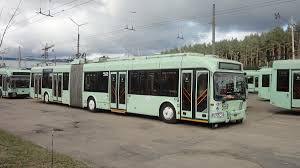
АКСМ-333— сочленённый трёхосный низкопольный троллейбус производства белорусского Белкоммунмаша, относится к третьему поколению троллейбусов, разработанных заводом.
Первый образец был представлен в 1998 году. Годы выпуска: 1999, 2002—2004, 2009—2016. В 2011 году прошла небольшая модернизация модели: троллейбус получил переработанный салон и признаки, характерные версии АКСМ-321 «Сябар» («Друг») (переднюю часть «Сябра» машины получили ещё в 2009 году).
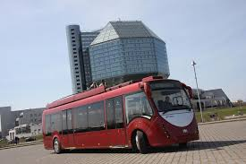
АКСМ-420 (Белкоммунмаш 42003А, «Витовт») — низкопольный троллейбус производства Белкоммунмаш. Относится к четвёртому поколению троллейбусов, разработанных заводом.
Троллейбус в ранних модификациях имеет 35 мест для сидения, из них 29 стационарные и 6 по правому борту откидные. Это сделано, чтобы увеличить вместимость машины в час-пик. Всего салон может вместить 115 пассажиров.Габариты троллейбуса соответствуют принятым стандартам: длина — 12,79 метра, ширина — 2,5, высота — 2,86 метра. Кузов изготовлен из композитных материалов. Машина оборудована электрическим выдвижным пандусом и системой «приседания» до уровня тротуара. Салон оснащён системой климат-контроля, поэтому форточек в окнах нет. В более поздних образцах форточки появились.
Благодаря разработанным на НПО «Энергия» конденсаторным батареям троллейбус может проехать не менее 5 км с полным салоном без контакта с проводами. Это позволит в случае необходимости объезжать дорожные заторы или иные препятствия.
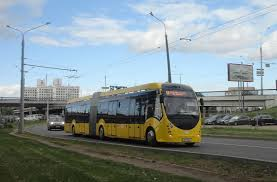
АКСМ-Е433 (Белкоммунмаш Е433, «Витовт Max Electro») — низкопольный сочлененный электробус производства ОАО "Управляющая компания холдинга "Белкоммунмаш". Имеет 38 мест, а также две накопительные площадки в районе второй и третей дверей. Всего салон может вместить 153 пассажира. Габариты электробуса соответствуют принятым стандартам: длина — 19 метров, ширина — 2.5, высота — 2.86 метра. Кузов изготовлен из композитных материалов. Машина оборудована электрическим выдвижным пандусом и системой «приседания» до уровня тротуара. В салоне имеются 7 форточек для обычного проветривания, а также установлена принудительная вентиляция. Запас хода составляет 12,5 км.
По заказу ГП «Минсктранс» до конца 2017 года ведется поставка 20 электробусов АКСМ-Е433 в троллейбусный парк № 2. После получения всей партии данных машин работа троллейбусов на маршрутах № 43 и 59 будет прекращена, а маршруты будут перенумерованы в № 43эл и 59эл соответственно.
15 мая 2018 года между ГП «Минсктранс» и ОАО "Управляющая компания холдинга "Белкоммунмаш" был подписан новый контракт на поставку 60 электробусов для нужд города Минска. Согласно договору город получит 28 электробусов особо большой вместимости модели АКСМ-Е433 в новом дизайне и 32 электробуса большой вместимости модели АКСМ-Е321 – это модель, которая будет изготавливаться на базе кузова классического троллейбуса 321. Планируется, что 17 единиц электробусов Минск получит уже до конца 2018 года, остальные 43 до конца апреля 2019 года.Осенью 2016 года первый экземпляр электробуса данной модели был представлен на выставке ЭкспоСитиТранс-2016 в Москве, после чего был возвращен заводу-производителю обратно на доработку. В апреле 2017 года первый электробус АКСМ-Е433 вернулся в Москву, однако его испытания были начаты только летом 2017 года. В связи с объявлением технического конкурса на разработку собственного российского электробуса со стороны ГУП «Мосгортранс», закупка АКСМ-Е433 осуществляться не будет по окончании испытаний. 10.09.2017 передан в Санкт-Петербург. Также один электробус используется в Тамбове.
Трамваи
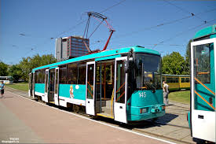
АКСМ-60102 — усовершенствованная модель трамвая АКСМ-1М. Представляет собой односекционный вагон, с двумя моторными тележками, трёхдверный, с тиристорно-импульсной системой управления тяговыми электродвигателями постоянного тока. Предназначен для эксплуатации на трамвайных линиях с шириной колеи 1524 мм. С 2015 года данная модель снята с производства.
Эксплуатируется главным образом в Белоруссии: в Минске, Витебске и Новополоцке; с 2008 года также в Перми, с 2011 года в Новосибирске и Кемерово, с 2012 года в Прокопьевске и Осинниках, с 2013 года — в Новокузнецке.
Тип — цельнометаллический, из стальных коробчатых профилей, соединённых электродуговой сваркой.
Трамвай АКСМ-60102
Трамвай АКСМ-60102, видно расположение оборудования на крыше
Боковины и крыша выполнена из сплошного (по всей длине трамвая) цельнотянутого стального оцинкованного листа толщиной 0,9 мм или обычного стального листа (по выбору заказчика). Передняя и задняя части крыши над ветровыми стеклами — стеклопластиковые. Теплоизоляция кузова выполнена из полистирольных плит. Антикоррозийная защита применяется для внутренних полостей труб каркаса кузова до высоты окон, наружных и внутренних поверхностей кузова, других элементов низа кузова. Покрытие наружных поверхностей выполняется высококачественными эмалями фирмы R-M, Франция.Настил пола является жёстким — из щитов бакелизированной фанеры толщиной 18 мм. Есть также и мягкий — из износостойкого линолеума; приклеен к жёсткому настилу и завёрнут на борт на высоту 300 мм; стыки сварены; в местах, наиболее подверженным нагрузкам окантован алюминиевыми профилями. Панели пола установлены на виброгасящих прокладках. Двери — двухстворчатые, выдвижного типа, с электромеханическим приводом на каждую пару створок. Створки дверей — на поворотных осях, при открывании выходят за пределы дверного проема наружу кузова. Этим достигается максимально возможный открытый проем. Кабина водителя отделена от пассажирского салона остекленной перегородкой с дверью, оборудованной замком. Дверь кабины имеет форточку для продажи билетов пассажирам. Она оборудована зеркалом обзора салона, огнетушителем ёмкость 2 л, вешалкой, солнцезащитной шторкой, предусмотрено место для аптечки. Пульт управления — из термопластика. Сиденье водителя выполнено с пружинной подвеской и амортизатором, с возможностью поворота сиденья на 90°. Крепление сидений — консольное, обеспечивающее возможность механической уборки. Пассажирские сиденья — раздельного типа, мягкие, из пенополиуретана, обтянуты моющимся материалом. Поручень сиденья травмобезопасный из интегрального пенополиуретана. На поздних трамваях начали устанавливать сиденья с высокой спинкой иной формы и металлическими поручнями. Боковые стекла закаленного типа, тонированные или прозрачные (по желанию Заказчика), вклеенные. Ветровое и заднее стекла панорамные, гнутые, бесцветные, полированные, безопасные, вклеенные в проемы. Система вентиляции вагона состоит из
салон — откидные форточки, 3 потолочных люка,
кабина — сдвижная форточка, вентилятор с ещё двухскоростным вентилятором-электрокалорифером.
Система отопления трамвая является калориферной с питанием от контактной сети. В салоне установлены шесть электрокалориферов по 4 кВт каждый, с двумя режимами обогрева. В кабине установлен электрокалорифер мощностью 6 кВт с тремя режимами обогрева с выводом обдува для устранения запотевания и обмерзания ветрового стекла.У трамвая 2 тележки поворотные, с двухступенчатым подрессориванием. Первая ступень обеспечивается буксовыми резиновыми амортизаторами, гасящими динамические высокочастотные колебания. Вторая ступень обеспечивается цилиндрическими пружинами и резиновыми амортизаторами, установленными в центральном подвешивании вагона. На тележках установлены по два электродвигателя постоянного тока мощностью по 80 кВт каждый. Колесные пары с редуктором выполнены с подрезиненными колесами. Карданный вал унифицирован с автомобилями «МАЗ». Электрооборудование размещено под полом, на крыше, в салоне, в передней части кабины, по левому борту. Для безопасности монтаж проводов высоковольтных и низковольтный цепей выполнен в раздельных жгутах. Высоковольтные цепи имеют две ступени электроизоляции. Токосъем ведётся пантографом ромбовидного типа. Комплект тягового оборудования — с тиристорно-импульсной системой управления производства «Белкоммунмаш». В качестве вспомогательного оборудования используется информационная система из маршрутные электронных указателей и речевой информатор производства «Интеграл».
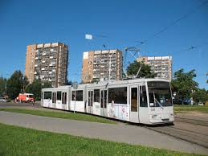
АКСМ-843 — трамвай повышенной вместимости, трехсекционный, с переменным уровнем пола, двумя и одной ходовой тележками, шестидверный, с тиристорно-импульсной системой управления тяговыми электродвигателями постоянного тока и с шарнирным сочленением между секциями. Предназначен для эксплуатации на трамвайных линиях с шириной колеи 1524 мм.
Единственный в мире экземпляр модели АКСМ-743 работает в Минске на маршруте № 6 и имеет парковый номер 031. После окончания эксплуатационного срока его планируется сохранить в качестве экспоната для планируемого музея общественного транспорта Минска.
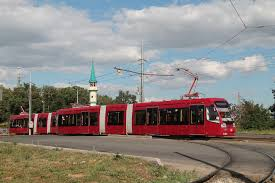
АКСМ-843 (также БКМ-843) — низкопольный трехсекционный трамвай, производящийся белорусским заводом Белкоммунмаш. Предназначен для эксплуатации на трамвайных линиях с шириной колеи 1524 мм. Вагон с двумя моторными и одной поддерживающей тележкой и электронной системой управления на IGBT-модулях тяговыми электродвигателями переменного тока выпускается в одно- и двухсторонней модификациях. Модель была снята с производства в связи с началом выпуска обновлённой 845-й модели.
В СНГ это первый доведённый до серии и штатной эксплуатации современный трехсекционный низкопольный трамвай
Первый экземпляр модели АКСМ-843 серебристого цвета поступил в Минский трамвайный парк в начале 2009 года. Ему был присвоен парковый номер 157. В первый рейс по маршруту № 5 отправился 25 июня 2009 и до сентября 2009 года проходил опытную эксплуатацию. С ноября 2009 года работает на постоянной основе на маршруте № 1.
В марте 2010 года в трамвайный парк Минска поступил второй экземпляр трамвая АКСМ-843 вишневого цвета, получивший номер 158. В первый рейс по маршруту № 1 он выехал 21 апреля 2010 года.
Третий экземпляр с бортовым номером 163 вышел на линию по маршруту № 1 25 мая 2011 года, а четвёртый (№ 164) — 23 августа. были переданы в другой город. 1 февраля 2014 года первые два вагона с бортовыми номерами №№ 157, 158 были отмечены, как не работающие. Эти трамваи также отправлены на предприятие-изготовитель. В настоящее время эксплуатируются вагоны № 158 и 163, вагоны №№ 157, 164 и 165 готовятся к введению в эксплуатацию.В конце 2011 года в Киев для эксплуатации в системе скоростного трамвая поступил односторонний вагон с заводским номером 3, планировалось совместное производство с компанией Богдан, поэтому вагон чуть позже получил наименование Богдан TR843 и заводской номер 1. С 2013 года вагон простаивал по причине проблем с тележками. 9 октября 2015 года вагон поехал по маршруту №3. 10 октября 2015 года он был представлен на трамвайном параде и совершил поездку с пассажирами до Подольского депо. А 11 октября 2015 года он был передан в Дарницкое депо. С 14 октября по 26 ноября 2015 года вагон работал с перерывами на запущенном специально под него маршруте №5к, а затем вновь встал на простой из-за возобновления проблемы с тележкой. Номер 701 вагону присвоили в депо имени Шевченко. Вскоре проблемы с тележкой были исправлены, и 11 июня 2016 года вагон вышел на маршрут №35. С 14 июня 2016 года работает по такой системе: будние дни - маршрут №28, выпуск №1, выходные дни - маршрут №35, выпуск №4.17 декабря 2012 года в Санкт-Петербург в трамвайный парк № 5 поступил первый вагон модели БКМ 84300М, где ему присвоили бортовой номер № 5211. 28 декабря 2012 года в трамвайный парк № 5 поступил второй вагон модели БКМ 843, где ему присвоили бортовой номер № 5212. 25 января 2013 года в трамвайный парк № 5 поступил третий вагон модели БКМ-843, где ему присвоили бортовой номер № 5213.
Этими вагонами, вместе с поставкой также в конце 2012 года аналогичных усть-катавских вагонов КТМ-31, длившаяся многие десятилетия монополия ПТМЗ на поставку трамваев в парки Санкт-Петербурга была подорвана.В марте 2012 года делегация Казани посетила ОАО «Белкоммунмаш» с целью изучения эксплуатационных характеристик и обсуждения возможных вариантов приобретения. Потребность города для использования на линии скоростного (ускоренного) трамвая первого этапа была оценена в 20 вагонов. В октябре стало известно о размещении заказа такой крупнейшей партии АКСМ-843 с поставкой в начале 2013 года в преддверии Универсиады-2013. Лизингодателем выступило ЗАО «Сбербанк Лизинг», стоимость сделки составила 1,014 млрд руб.
15 апреля 2013 в трамвайное депо Казани поступили первые 2 вагона из запланированных 20. Первый вагон вышел в рейс 7 мая 2013 г, второй был заявлен на 15—17 мая.
До начала Универсиады 6 июля поставляется 12 вагонов, остальные — по август. Вагонам начали присваивать номера с 1300. Вагоны имеют тёмно-рубиновый (бордово-вишнёвый) цвет.
По состоянию на 25 апреля 2014 года - поступили все 20 вагонов. В 2017 году по заказу Казани были произведены три трёхсекционных трамвая модели АКСМ-845, разработанные исходя из пожеланий казанского МУП "Метроэлектротранс", учитывая опыт работы с моделями 843 и 62103. Вагоны с номерами 1400-1402 введены в эксплуатацию с пассажирами 25 января 2018 года.